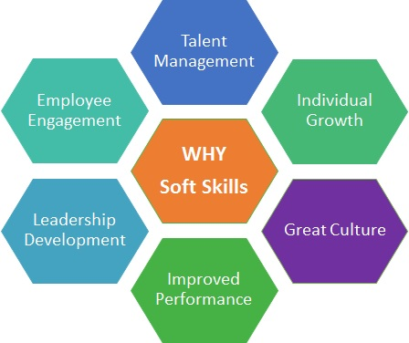

Soft skills is a term often associated with a person's "EQ" (Emotional Intelligence Quotient), which is the cluster of personality traits that characterize one's relationships with other people. These skills can include social graces, communication abilities, language skills, personal habits, cognitive or emotional empathy, and leadership traits. Soft skills contrast with hard skills, which are generally easily quantifiable and measurable (such as software knowledge or basic plumbing skills). Soft Skills Work on: Strong work ethic Positive attitude Good communication skills Time management abilities Problem-solving skills Acting as a team player Self-confidence Ability to accept and learn from criticism Flexibility/adaptability Working well under pressure Research from the Society for Human Resource Management found that employers actually care more about soft skills than they do technical abilities like reading comprehension and mathematics. One reason soft skills are so revered is that they help facilitate human connections. “Soft skills are key to building relationships, gaining visibility, and creating more opportunities for advancement,” says Kathy Robinson, founder of Boston career-coaching firm TurningPoint. Basically, you can be the best at what you do, but if your soft skills aren’t cutting it, you’re limiting your chances of career success. Read on to learn which soft skills are critical to have firmly under your belt and what steps you can take to acquire them.
